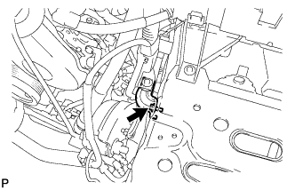
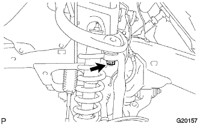

ПЕРЕДНИЙ ВЕРХНИЙ РЫЧАГ ПОДВЕСКИ > УСТАНОВКА |
| 1. ВРЕМЕННО ЗАКРЕПИТЕ ЛЕВЫЙ ВЕРХНИЙ РЫЧАГ ПЕРЕДНЕЙ ПОДВЕСКИ В СБОРЕ |
 |
Предварительно закрепите верхний рычаг подвески и 2 шайбы с помощью болта и гайки.
|  |
Подсоедините кронштейн и закрепите его болтом.
|  |
Заверните новую гайку и установите фиксатор.
| 2. УСТАНОВИТЕ ПРОВОД ДАТЧИКА СИСТЕМЫ ПРОТИВОСКОЛЬЖЕНИЯ |
Подсоедините разъем следующим образом.
Для левой стороны:
1. Введите в зацепление разъем, а затем подсоедините разъем.
Для правой стороны:
1. Закрепите зажим датчика системы противоскольжения болтом.
Установите 2 зажима жгута проводов и закрепите их 2 болтами.
Установите 2 зажима жгута проводов и закрепите их 2 болтами.
Введите в зацепление фиксатор.
Подсоедините разъем.
| 3. УСТАНОВИТЕ ПЕРЕДНЕЕ КОЛЕСО |
| 4. ДОБЕЙТЕСЬ УСТОЙЧИВОСТИ ПОДВЕСКИ |
Опустите автомобиль.
Стабилизируйте подвеску, несколько раз покачав автомобиль вверх-вниз.
| 5. ЗАКРЕПИТЕ ЛЕВЫЙ ВЕРХНИЙ РЫЧАГ ПЕРЕДНЕЙ ПОДВЕСКИ В СБОРЕ |
Затяните гайку.
| 6. ПРОВЕРЬТЕ И ОТРЕГУЛИРУЙТЕ УГЛЫ УСТАНОВКИ ПЕРЕДНИХ КОЛЕС |
Проверьте и отрегулируйте углы установки передних колес (Нажмите здесь).